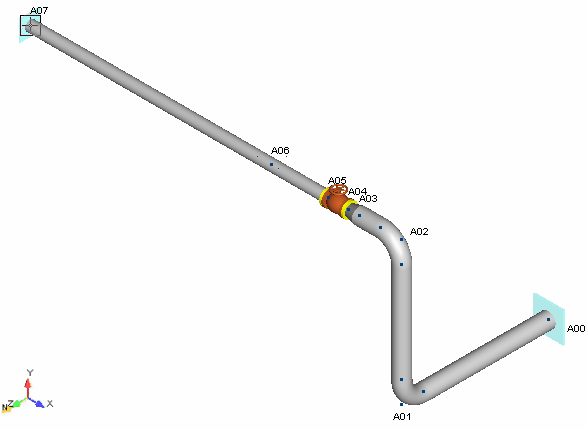

Select Insert > Supports > Anchor/NodeLink.
- The Anchor/NodeLink dialog is displayed. Press OK to accept the defaults and close the dialog.
- Select View > Orientation > Extent Default ISO View to return to the initial view of the model.
-
.jpg) Select File > Save
> Save. The completed view of Segment A is shown
below.
Select File > Save
> Save. The completed view of Segment A is shown
below.
